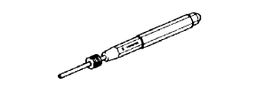

ТРОС МЕХАНИЗМА ПЕРЕКЛЮЧЕНИЯ ПЕРЕДАЧ > УЗЛЫ И ДЕТАЛИ > Подготовка

| Фирменный герметик Toyota 1281, Three Bond 1281 или аналогичный | |
| Фирменный герметик Toyota 1324, Three Bond 1324 или аналогичный |
| Прибор для измерения углов | - |
| Штангенциркуль | - |
| Нутромер | - |
| Индикатор часового типа | - |
| Комплект плоских щупов | - |
| Микрометр | - |
| Система бортовой диагностики OBD II | - |
| Поверочная линейка | - |
| Динамометрический ключ | - |
| V-образная призма | - |
| Штангенциркуль | - |
 | 09017-1C130 | Разрезная головка 17 мм | - |
|  | 09031-00030 | Бородок с тонким цилиндрическим концом | - |
 | 09082-00040 | Электрический диагностический прибор TOYOTA | - |
| Жидкость для автоматических трансмиссий: Заполнение сухой системы | 1GR-FE: | 10,9 литра (11,5 кварты США, 9,6 английской кварты) | Жидкость для автоматических трансмиссий WS от компании Тойота |
| 1KD - FTV: | 10,6 литра (11,2 кварты США, 9,3 английской кварты) | ||
| Жидкость для автоматических трансмиссий: Заполнение после слива | 1GR-FE: | 3,0 литра (3,2 кварты США, 2,6 английской кварты) | |
| 1KD - FTV: |